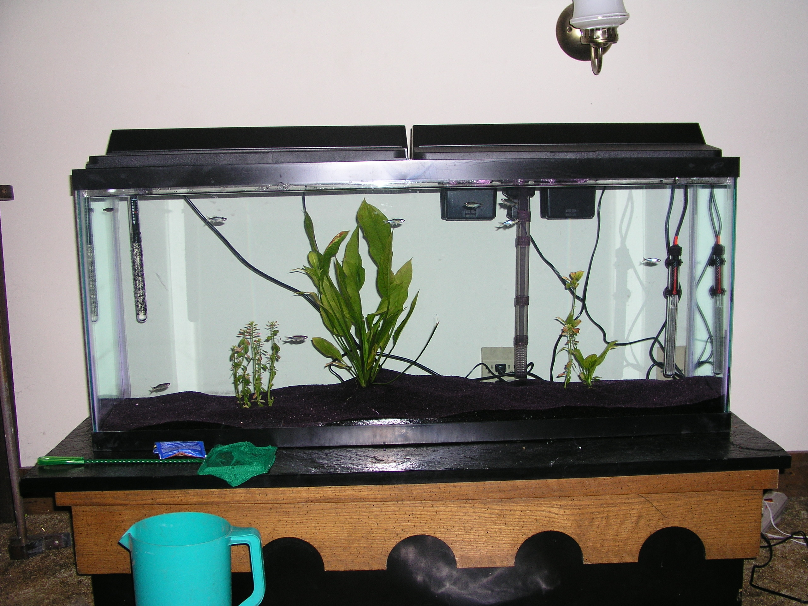

By: Doug on 2009-06-19
I have long thought being good at something requires you to do it every day. I am not sure where I first heard this advice but no one demonstrates it's power better than the artist that draws penny-arcade. Compare their first and latest. I beleive that a person who writes code everyday is making similar gains in improvement. In the software industry development cycles are getting shorter and shorter. The classic old release cycle went gather requirements for 4 months, code for 4 months. test for 4 months release! Our shop does something like a 3 month release cycle, requirements 1 day, code for 2 months, test for a month. There are companies out there that do much much faster processes including some that run a huge battery of automated tests on every line of code that gets checked in and then that code immediately goes live to customers. Others gather requirements as they go releasing early and often to get real feedback on features.
The advocates of these "Agile" methodologies usually claim that the automated testing or testing as you go is the real productivity increaser. Or they claim that the quicker turn around time leads to happier customers who can give feedback and influence the next round right away. These surely help but I would like to argue that the real boost to productivity is the requirements and test cycles are shortened so that the developers are writing code every or very nearly every day. Better programmers equals happier coders equals better project.
By: Doug on 2009-05-25
I just got back from the cruise. It was awesome. The puppies are the most exhausted I have ever seen them. Mostly from running around on their own little puppy vacation but at least some of it must be from the gallon worth of blood sucking ticks we just pulled off of them. Anyways hilights from the cruise I broke a water proof camera snorkeling down about 20 feet for a picture of a sea turtle. I got to ride a segway and it was awesome. You know that feeling you get after wearing ski boots for a long time and then you take them off you feel like you are stronger then ever before? Well this is just like that except when you get off the segway you feel like a snail. I actually think your mind gets into some sort of zen with it unlike a bicycle or a car which never feel natural. It is a crime that they are hated as much as they are. Jet Blue came through for us big time, our flight back was not until 6 which meant that we would have to wait at the airport for like 9 hours or so. They moved us to a 1 o' clock flight for no charge and accepted my overweight bag without charging us. I played mini golf with Keely in hurricane force winds which was a blast the satisfying plunk of the ball into the hole filled with water was the best part.
By: Doug on 2009-05-17

Heading to the eastern carribean after an adventurous start to the weekend. Hint the jeep decided to over heat heading down to the parents. And we had to put 2 great danes and a kitty up in a hotel. They were great. It actually would have made a great commercial for comfort inn. Two great danes all cuddled up in their fluffy beds. We didn't get any pictures probably because it was the longest most stressful day I have ever had. Anyways heading out.
By: Doug on 2009-05-10
The house has about a quarter of an acre of land. Me being the cheap bum that I am decided that a push mower the ones with the blades that spin when you turn the wheels would be satisfactory. Anyways it is good enough I am just setting the stage for you. When the grass gets tall and wet its a little harder to push then normal. So Keely and I were taking turns strafing the yard. After a particularly vigorous pass on my part I look down and see a gooball or booger if you will on my shirt. I give it a flick and then I see another and another and another (repeat a dozen or so times). I pull one of these slimes off to get a good look at it and they are the cutest little baby slugs. You could see the little eye stalks and everything. I must have hit a nest of them or one really big one and it split apart into 100 little ones. Anyways I thought it was cool and might gross you out.
By: Doug on 2009-05-10
So I opened up my old Virginia Tech e-mail address and found out that they were going to delete all the files that I had hosted with them. This would not do so quick as a flash I downloaded it all and for now I am rehosting it here on github.
Since it has been 5 years since I have last updated this I figured I would give everyone a quick update. I graduated from Virginia Tech in computer science. I got a job with IBM in northern va. I worked as a contractor for the IRS changing unusable paper tax forms into unusable electronic tax forms. I bought a house and got married to Keely. Then went and started contracting with the FDIC. I realized that the whole big business big government software thing wasn't for me so I joined a startup called clear standards (still in northern va). Thats where I am now. Somewhere in there we got 2 great danes Daisy and Thor. There is the 60 second summary of the last 5 years of my life.
By: Doug on 2004-4-10
So Keely had me making easter eggs earlier today the whole dipping of eggs into jerry rigged containers with a little twisted metal coat hanger like contraption. Now my family as far as i can remember may have done this a couple of times but apparently this was quite the event for her family which is cool and everything it just puts me at a disadvantage as shes had years of egg dyeing competition behind her. So shes over there producing eggs that fade beautifully from purple to yellow. And im over here trying to carry my half finished (now orange and white) (soon to be orange and maroon) egg over the sea of dining hall cups all with a diferent color of vinegar dye to the egg try where the egg will dry when the little wire thing which i can barely hold onto twists in my hand and in goes my beautiful work straight into the pink cup noooooo i say and then as you may or may not have predicted up comes the pink acidic dye straight for the eye balls. very exciting stuff let me tell you.
By: Doug on 2004-03-31
the lack of upadatedness on this page is truly pathetic on my part. I was always told that the hardest thing about keeping a journal is not the writing in it every part but to start writing everyday again once you have stopped for whatever reason. Now this isnt exactly a place where i bore you with stupid things like feelings (aka a journal) but i think that which i just spoke of is the reason for my slackness. anyways. interestingly enough i never realized how seasonal walmart is. I challenge you to go into a walmart and to find a fan any fan that doesnt have a heater attached to it. I assure you this is a lost cause. Though once march rolls around they have 2 aisles of them. ill take you back for just a second the fish tank danny and i bought a long time ago (beginning of the school year) was 20 gallons and the cheapest light fixture we could find for it at walmart was 12 dollars and lets just say it was ghetto. But now that its march Keely and i are looking around at walmart and i stop by the light section just for kicks and she notices that i can buy a light fixture that is 4 feet long a good 3 times the length of the 12 dollar fixture for only 6 bucks so yes now im carrying a four foot long light fixture back to the dorm to use on my fish tank which is at home. Its funny trust me.
I know most of you are still way too cool to ever pay for music But if you are like me you end up downloading a song and listening to it like 3 times and then you are too lazy to click on it ever again you know what i mean this is phenomena is closely related to why im so dang skinny ... to lazy to eat we have girlfriends and mothers and such to remind us to eat similarly us lazy people need a dj to keep us interested in music and this is what xm satelite radio is good for. Its actually really cool there are like 200 stations without commercials first off and there is one channel that my room mate likes that is just like 96x from back home and then there is another station just like z104 from back home ironically its called top 20 and it just plays the same 20 songs over and over how funny is that but yeah for real you all should definately check that out.
I'm still a tour guide which is so much fun. Apparently im really good because "I dont act like im reading from a script" maybe thats because i talk about what i want to but for serious if anyone from york or wherever wants a tour ill hook you up all i ask is for food preferably of the greasy persuasion.
Also i get asked way too much the most famous question "What do people do on the weekends" I like how the parents think they are being all sneaky i truthfully would rather them ask do students party and drink until they pass out in the nearest ditch only to be saved from drowning by the police hauling them off to jail at this school. Because the way it is as i see it is you either go party and collapse in a ditch or you have a girl friend or you download a movie off kazaa, or any combination of the three and personally non of those choices are exactly what an immpressionable parent wants to hear.
By: Doug on 2004-03-22

this my friends is a 4 foot long 55 gallon fish tank with 40 pounds of black sand and 10 giant danios also 2 250 watt heaters. Do you have any idea how long it takes to fill a 55 gallon tank one gallon at a time? lets just put it this way i should have run the hose through the house.